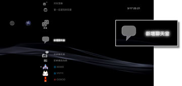
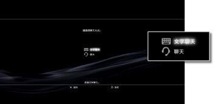
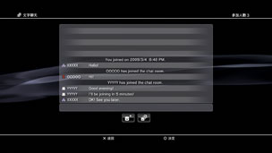

開始／結束文字聊天
若要使用此機能，可能需先更新系統軟件。
可與已登錄至好友名單的對象開始文字聊天。
開始文字聊天
1. |
選擇 |
|---|---|
|
 |
|
2. |
選擇 |
|
 |
|
3. |
輸入文字聊天室的名稱，再選擇［確定］。 |
4. |
選擇想招待的好友後，選擇［確定］。 |
|
 |
 （新增聊天室）。
（新增聊天室）。 （文字聊天）。
（文字聊天）。提示
- 必須先登入PlayStation®Network。
- 無法在文字聊天室傳送招待加入聊天的簡訊。
- 一個文字聊天室最多可有16人參加。
- PlayStation®Network的帳戶設定若限制了聊天的使用範圍，即可能無法利用文字聊天機能。有關視聽年齡限制的詳細機能，請參閱［XMB™之基本操作］ ＞ ［使用視聽年齡限制機能］。
參加文字聊天
若有好友招待您參加文字聊天室，螢幕右上方會顯示通知訊息。選擇 （好友）的
（好友）的 （文字聊天室），再選擇希望參加的聊天室。
（文字聊天室），再選擇希望參加的聊天室。
提示
 （設定）＞
（設定）＞ （主機設定）＞ ［通知訊息］設定為［不顯示］時，不會顯示通知訊息。
（主機設定）＞ ［通知訊息］設定為［不顯示］時，不會顯示通知訊息。- 某些遊戲在遊玩時亦可參加文字聊天。按下無線控制器的PS按鈕，選擇（好友）＞（文字聊天室）再選擇希望參加的聊天室。按下PS按鈕，即可返回遊戲畫面。
- 最多可同時參加3個聊天室。
- （文字聊天室）最多可顯示20個聊天室。
離開聊天室
在文字聊天的畫面按下 按鈕關閉聊天室。選擇想離開的聊天室再按下
按鈕關閉聊天室。選擇想離開的聊天室再按下 按鈕，在選項選單選擇［離開］。
按鈕，在選項選單選擇［離開］。
提示
若關閉PS3™的電源或登出PlayStation®Network，即會自動離開聊天室。若您離開聊天室後再度參加，在您離開期間的聊天記錄將不會顯示。
刪除聊天室
選擇想刪除的聊天室後按下按鈕，在選項選單中選擇［刪除］。
使用操作介面
可使用畫面上的操作介面執行以下操作。
 |
邀請好友 | 招待好友參加文字聊天室。 |
|---|---|---|
 |
參加者清單 | 顯示文字聊天室的參加者清單。 |